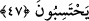
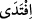
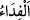

o bu halde iken bile şöyle diyordu: “Dünyada yediğim bu kamçılar âhiretteki o demir
kamçılardan daha hafiftir!”
Şu sözü söyleyen ne güzel söylemiş:
Ebû Hanîfe müftülük etmeden öldü.
Sen ise fetva vermeyecek olsan ölürsün.
47. Eğer yerde ne varsa hepsi ve onunla birlikte bir misli daha o zulmedenlerin
olsaydı, kıyamet gününde azâbın fenalığından (kurtulmak için) elbette bunları fedâ
ederlerdi. Halbuki (o gün) onlar için, Allah tarafından, hiç hesaba katmadıkları
şeyler ortaya çıkmıştır.
“Eğer yerde ne varsa hepsi” yâni dünyada bulunan malların ve mühimmâtın tamamı
“ve onunla birlikte bir misli daha o zulmedenlerin olsaydı, kıyamet gününde azâbın
fenalığından (kurtulmak için) elbette bunları fedâ ederlerdi.”
Kişi, kendi nefsinden mal bezledip harcadığı zaman “__WORD__ denir. Çünkü “__WORD__ kişiyi,
belâya karşı yaptığı harcama karşılığında o belâdan korumak demektir. Yâni, canlarını o
şiddetli azaptan kurtarmak için bütün bu varlıkları fidye verirlerdi. Fakat kıyamet günü
mal diye bir şeyi yoktur! Olsa bile fidye olarak kabul edilmez! Bu, ağır bir tehdîd ve
onların kurtulma ümidini tamamen kesmektir.
et-Te’vîlâtü’n-Necmiyye’de der ki: “Allah Teâlâ işâret etmektedir ki âyette sayılan
bütün bu şeyler kıyamet günü azâbı baştan savmak için kabul edilmez. Bugün ise burada
zerre kadar hayır, bir lokma sadaka, bir tevbe ve istiğfâr cümlesi bile kabul edilir. Yine
âhirette gözlerinden yaş yerine kan döküp ağlasalar onlara merhamet edilmez. Bugün ise
bir damla gözyaşıyla pekçok günah defterleri silinir.”
Mesnevî’de der ki:
Her ağlayışın sonu nihâyetinde gülüştür.
Sonu gören kişi mübârek bir kuldur.
Halkın onun için yağdırdığı gözyaşı incidir,
Ama halk gözyaşı sanır.
Görmez misin ki Âdem ve Havvâ’nın (aleyhime’s-selâm) gözyaşları dünyada nasıl
mücevhere dönüştü! Âhirette olsaydı bir işe yarar mıydı?!
“Halbuki (o gün) onlar için, Allah tarafından, hiç hesaba katmadıkları şeyler
ortaya çıkmıştır.”